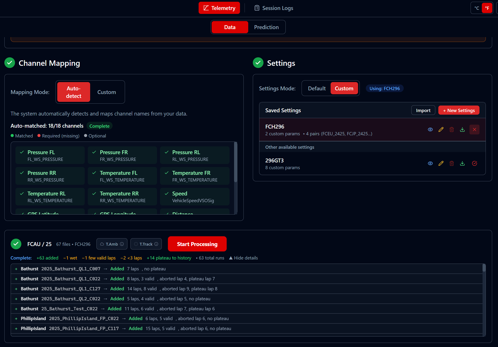
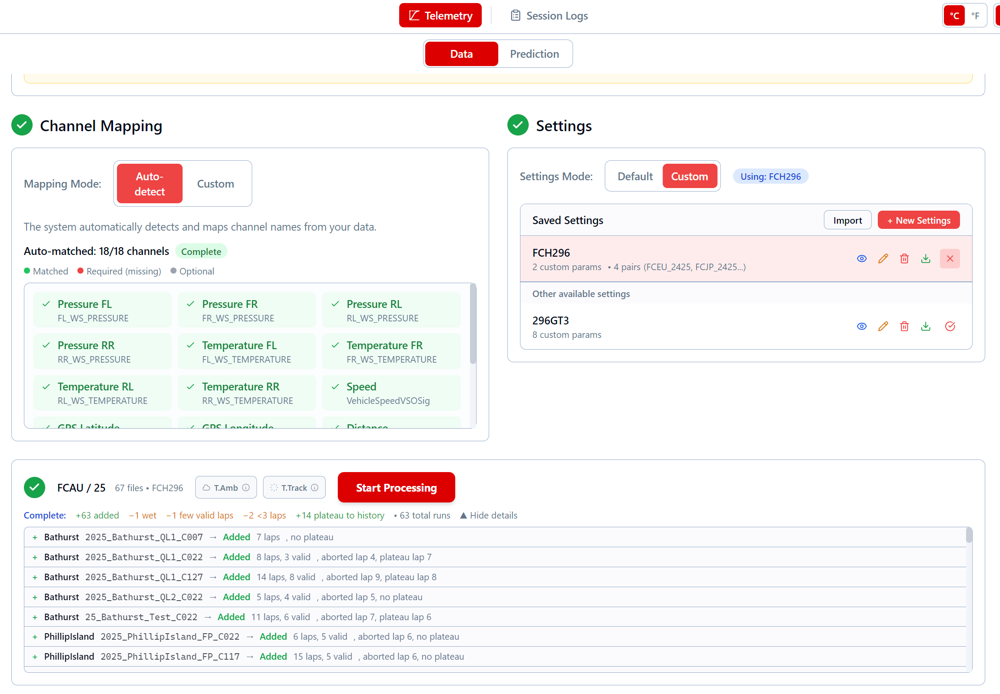
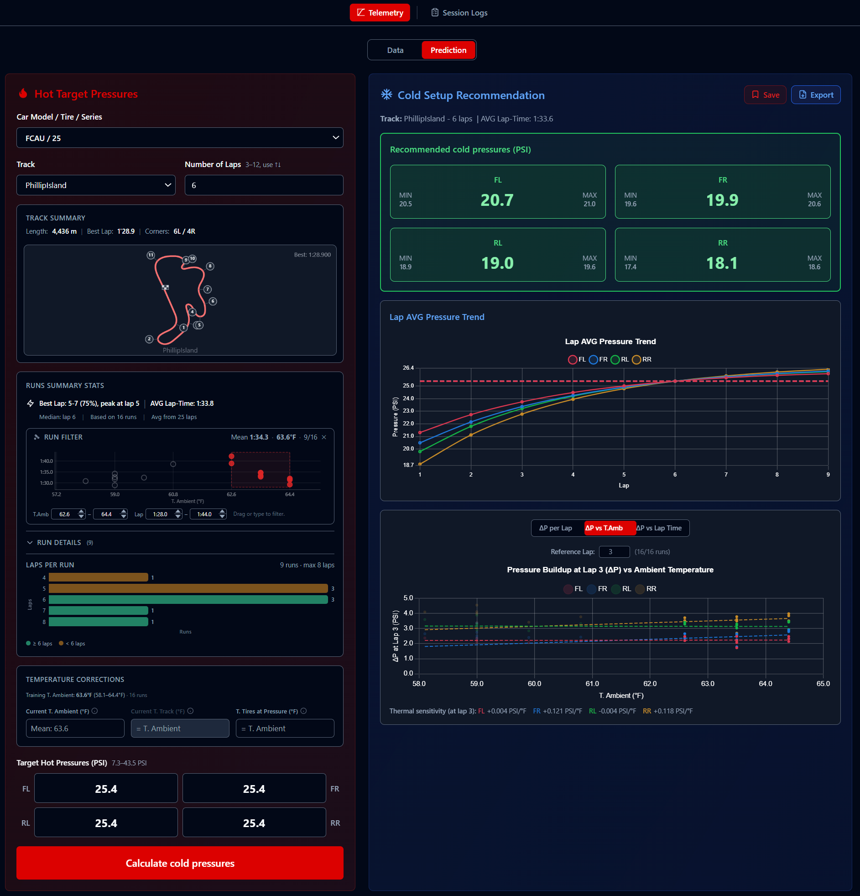
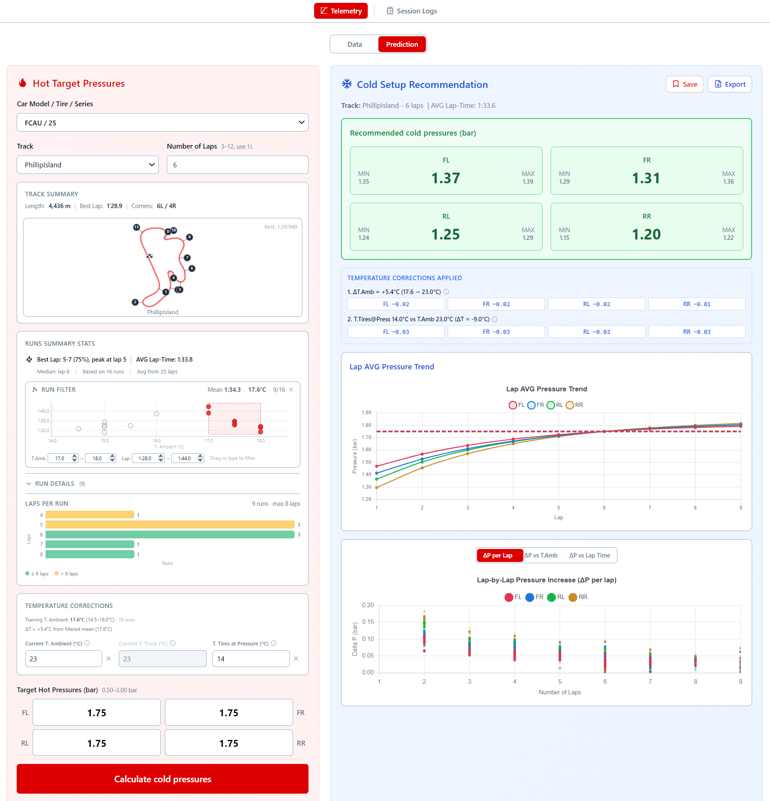
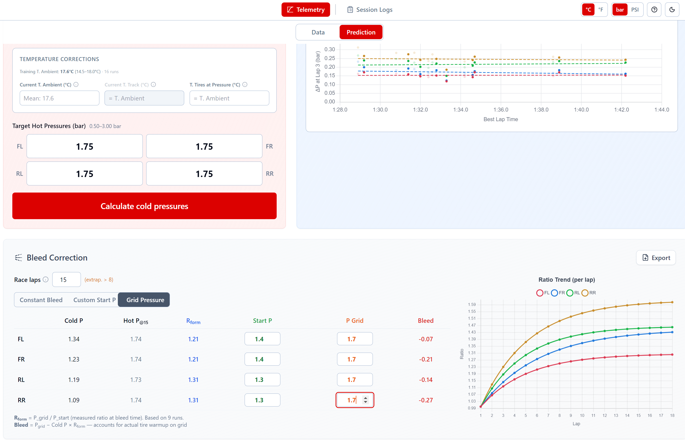
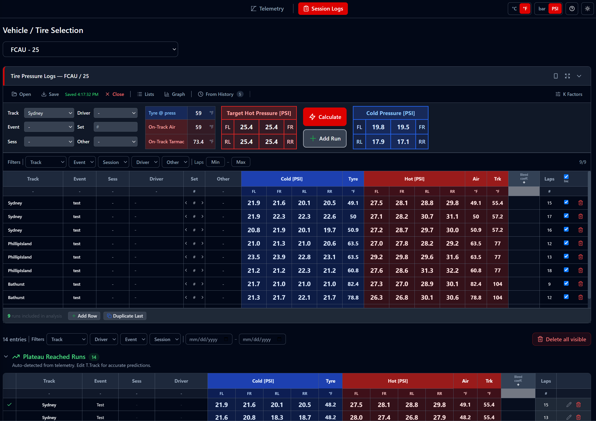
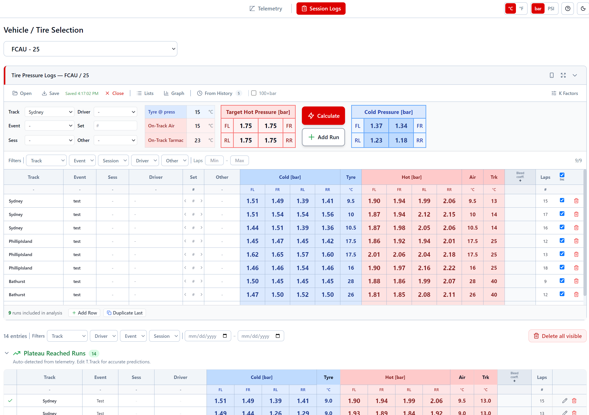

Telemetry ZIP or linked folder (WinTAX4, WinDarab, MoTeC) · Target hot pressures · Track & laps · Event Conditions (T.Ambient, T.Track)
Optimal cold pressures per corner · Temperature corrections (ΔT.Amb, ΔT.Track, T.Tires@Press) · Confidence intervals · Formation lap bleed
Features
Telemetry — Data
Manage vehicle/tire pairs, upload telemetry, and let the app handle the rest. Auto-detection identifies your software format, and linked folders keep your data in sync without creating ZIP archives.
Drop a ZIP or link a folder — the app identifies WinTax4, WinDarab, or MoTeC from file content with confidence percentage.
No ZIP needed. Link a CSV folder directly — it auto-scans when you switch pairs and remembers the path across sessions.
Training Runs, Plateau Runs, and Session Logs counts at a glance. Export/import configurations as .tpp files across PCs.




Processing & Channel Mapping
Channel mapping auto-matches your telemetry columns. Named settings let you save and reuse processing configurations across pairs. Per-run details show exactly what happened.
Auto-detect or manual mode with color-coded match status. Save and reuse mappings across vehicle/tire pairs.
Save processing configurations, assign them to multiple pairs, import/export as .tpp-settings files.
Every run shows its result: added, discarded (wet, prewarmed, aborted), plateau lap, and aborted lap number.
Cold Pressure Prediction
The full prediction workflow: filter training runs on the scatter plot, get per-corner cold pressures with confidence intervals, and see how pressures build up over laps.
Drag to select by T.Ambient and lap time, step arrows for ±0.5°C / ±0.5s. Runs Summary Stats with per-run details, laps histogram, and extrapolation warning.
Three decomposed corrections — ΔT.Amb, ΔT.Track, T.Tires@Press — using OptimumG gas law, each with per-wheel pressure deltas.
MIN / P50 / MAX confidence intervals, pressure trend charts, GPS track layout. Switch bar/PSI and °C/°F instantly.
Pressure buildup per lap, ΔP vs T.Ambient, and ΔP vs Best Lap Time — see how conditions and driver pace affect pressure behavior.




Bleed Correction & Run Analytics
Exponential pressure build-up model calculates per-wheel expansion ratios from your telemetry. Set race laps and formation laps — the system tells you how much to bleed on the grid.
R = P_hot / P_cold computed from real data. Ratio Trend chart shows per-wheel R over laps with formation lap marker.
Constant Bleed (set desired bleed), Custom Start P (set grid pressures), and Grid Pressure (enter measured pressures from practice).
Per-wheel R over laps with formation lap marker — visualize exactly when and how much pressure builds up.
Session Logs & Tire Pressure Logs
Tire Pressure Logs tracks compounds across race weekends with a built-in OptimumG pressure calculator. Plateau detection auto-saves stabilized runs as verified baselines.
Cold/hot pressures, compounds, air and track temperature per run. K-factor columns show per-wheel thermal expansion.
OptimumG gas law formula for hot/cold conversion. Enter target conditions, get recommended cold pressures instantly.
Stabilized runs (97% buildup) auto-detected from telemetry and saved as verified baselines. Track Relations Matrix transfers pressure knowledge between circuits.


FAQ
How do I get started?
What data do I need?
How does the Run Filter work?
How do temperature corrections work?
How does the bleed correction work?
Can I transfer pressure data between tracks?
Does it work for long runs vs qualifying?
What is Plateau Detection?
Can I use it without TPMS?
What is Tire Pressure Logs?
More questions? Email us
Download the App
Fill in the form and start using Tire Pressure Predictor
Or email directly: lvillaengineering@gmail.com
Looking for more motorsport tools? Visit motorsportsoftware.com